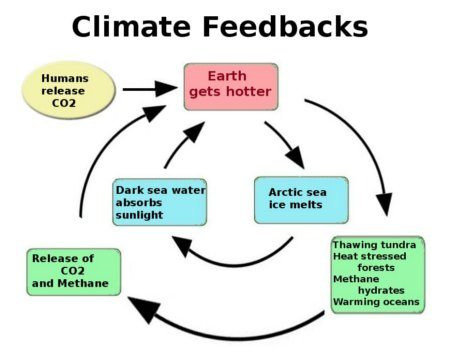

What is a Feedback Loop
Feedback loops can amplify climate change by triggering changes in the climate that act like a microphone pointed at a speaker. The sound from the speaker goes into the microphone, and then goes back into the speaker again. Feedback loops in climate change act the same way, and one change in the climate can cause the same thing to happen again.

An example of a feedback loop.
For example, when water evaporates it makes clouds, which warm the climate, which we talk about on the clouds page. The warmer climate will evaporate more water, and make more clouds.
There are two different types of feedback loops, positive and negative. A positive feedback loop amplifies something, like change or sound. A negative feedback loop will reduce the change, or sound. In terms of global warming, negative feedback loops are good, because they will reduce the change and help to save the planet. Positive feedback loops will amplify the change that has already happened, and will turn the planet into a wasteland.
What do they do?

A dangerous feedback loop heating the ocean, and the rest of the planet.
Feedback loops can both help and hurt the planet. Some feedback loops will warm the planet faster then ever, but others can help us cool it back down. An example of a feedback loop that warms the planet, or a positive feedback loop, is the clouds. The clouds form from water vapour, and then warm the planet, creating more clouds. An example of a negative feedback loop, or a helping feedback loop, would be the albedo effect, where when the arctic cools, it reflects more sunlight, cooling it off even more.
If we want to save the planet, we need to take advantage of feedback loops, and use negative feedback loops to cool the planet.